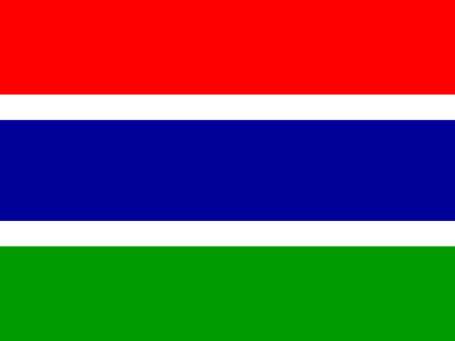

Question 81

Flag / Country🟩 Independent
Your answer: nigeriaCorrect: Nigeria
Capital🟩 Independent
Your answer: abujaCorrect: Abuja
Language🟩 Independent
Your answer: englishCorrect: English
Accepted independently
Batch 9 · Q81–Q90 · 24 October 2026 · 30/30 Independent
| Score | Flags / Country | Capitals | Languages |
|---|---|---|---|
| Pure | 10/10 (100%) | 10/10 (100%) | 10/10 (100%) |
| Pure + Assisted | 10/10 (100%) | 10/10 (100%) | 10/10 (100%) |
| Independent | 10 | 10 | 10 |
| Assisted | 0 | 0 | 0 |
| Wrong | 0 | 0 | 0 |
| Cancelled | 0 | 0 | 0 |
| Score | Flags / Country | Capitals | Languages |
|---|---|---|---|
| Pure | 90/90 (100%) | 90/90 (100%) | 90/90 (100%) |
| Pure + Assisted | 90/90 (100%) | 90/90 (100%) | 90/90 (100%) |
| Independent | 90 | 90 | 90 |
| Assisted | 0 | 0 | 0 |
| Wrong | 0 | 0 | 0 |
| Cancelled | 0 | 0 | 0 |
Accepted independently

Accepted independently

Accepted independently

nwakchot accepted by previous referee precedent

jeureuselam accepted historical phonetic

saint vincent accepted shorthand

solmon island and honaria accepted spelling variants

Accepted independently

angloa and portguese accepted phonetic/typo

ksa accepted country abbreviation
| Q | Your Country | Correct Country | Flag | Your Capital | Correct Capital | Capital | Your Language | Correct Language(s) | Language |
|---|---|---|---|---|---|---|---|---|---|
| 81 | nigeria | Nigeria | 🟩 Independent | abuja | Abuja | 🟩 Independent | english | English | 🟩 Independent |
| 82 | oman | Oman | 🟩 Independent | muscat | Muscat | 🟩 Independent | arabic | Arabic | 🟩 Independent |
| 83 | gambia | Gambia | 🟩 Independent | banjul | Banjul | 🟩 Independent | english | English | 🟩 Independent |
| 84 | mauritania | Mauritania | 🟩 Independent | nwakchot | Nouakchott | 🟩 Independent | arabic | Arabic (Hassaniya widely spoken) | 🟩 Independent |
| 85 | palestine | Palestine | 🟩 Independent | jeureuselam | Jerusalem | 🟩 Independent | arabic | Arabic | 🟩 Independent |
| 86 | saint vincent | Saint Vincent and the Grenadines | 🟩 Independent | kingstown | Kingstown | 🟩 Independent | english | English | 🟩 Independent |
| 87 | solmon island | Solomon Islands | 🟩 Independent | honaria | Honiara | 🟩 Independent | english | English; Solomon Islands Pijin (spoken) | 🟩 Independent |
| 88 | france | France | 🟩 Independent | paris | Paris | 🟩 Independent | french | French | 🟩 Independent |
| 89 | angloa | Angola | 🟩 Independent | luanda | Luanda | 🟩 Independent | portguese | Portuguese | 🟩 Independent |
| 90 | ksa | Saudi Arabia | 🟩 Independent | riyadh | Riyadh | 🟩 Independent | arabic | Arabic | 🟩 Independent |
All 30 answers Independent, no clues. Q84, Q85, Q86 follow established phonetic/shorthand rulings; Q87 and Q89 spelling variants accepted; Q90 KSA accepted for Saudi Arabia.
90 / 195 countries · Batch 9 of 20 complete · 105 remaining
Combined Pure 270/270: Flags 90/90; Capitals 90/90; Languages 90/90.